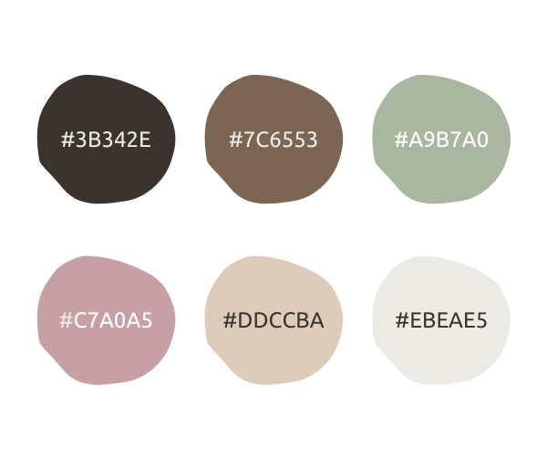
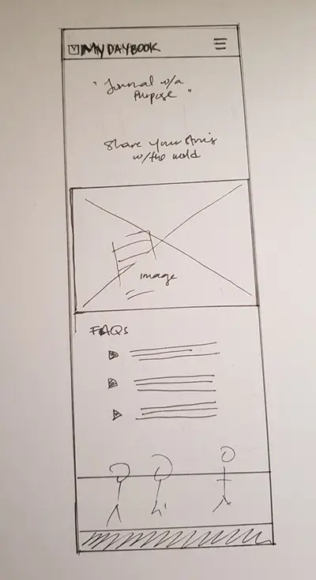
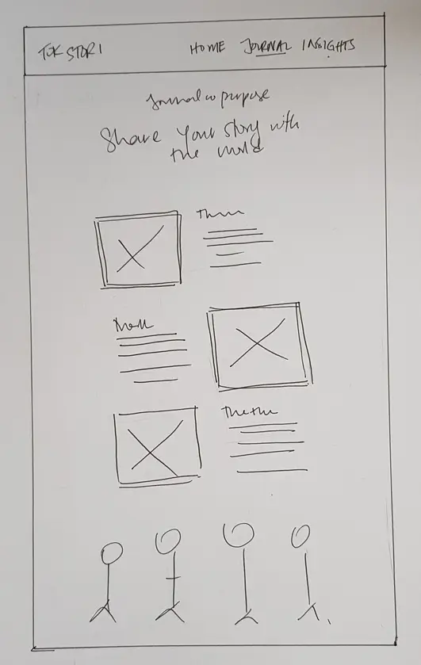

Journal with purpose.
Share your story with the world.
The Site Plan
Site Name
Tok Stori: A journaling and content creation tool.
Tok stori is a phrase that comes from Melanesian cultures in the Pacific. It refers to telling and sharing stories as a community - creating a shared narrative - in order to make sense of experiences and emotions and to preserve wisdom and learning.
The Tok Stori journaling tool helps us to capture our own daily stories in a way that makes them easy to share.
Site Purpose
This website is the home of Tok Stori, a journaling tool that helps users seamlessly record journal entries then share them, especially as social media posts.
For the scope of this WDD 131 project, this website will include 3 pages:
- A home/landing page: To introduce the tool and its benefits
- A journal entry page: A simple form where users can create their journal entries and attach media
- A journal insights page: Displays an overview of the user's journaling history and insights
Scenarios
Questions that our target audience might ask when they visit this website:
- How will this tool help me record my daily thoughts and experiences easily and securely?
- How can I seamlessly adapt, then share my journal entries to my social media?
Color Schema
To invite a calm and reflective mood, this website uses a "Muted Earth Tones" color palette.

The lightest shade #EBEAE5 provides a neutral base as our primary background color. The darkest, #3B342E, brings a strong contrast as our main text color and the background for our footer.
These two colors anchor our design while the remaining palette hues feature as accent colors in buttons, hover effects and images.
Typography
We're keeping it simple by using a single font throughout this website: Ubuntu, a clean and modern sans-serif typeface.
If Ubuntu isn't available, the browser will fall back to the default sans-serif font-family.
Wireframe
Wireframe for mobile screens:
Wireframe for desktop screens:
